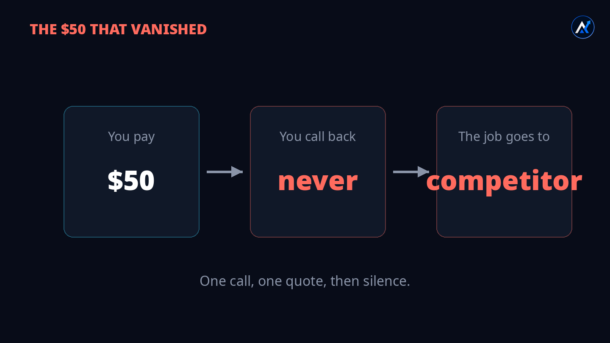
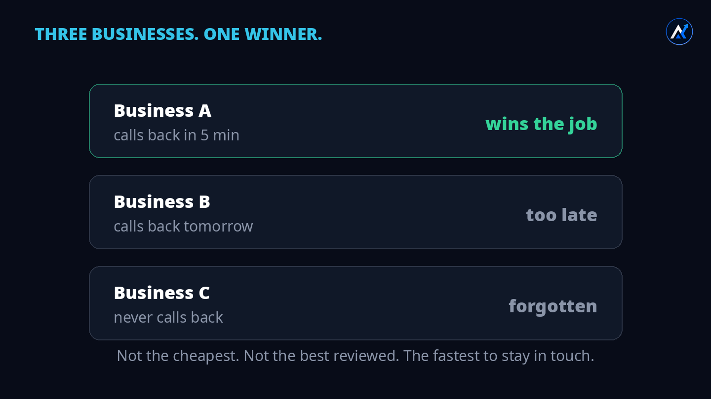
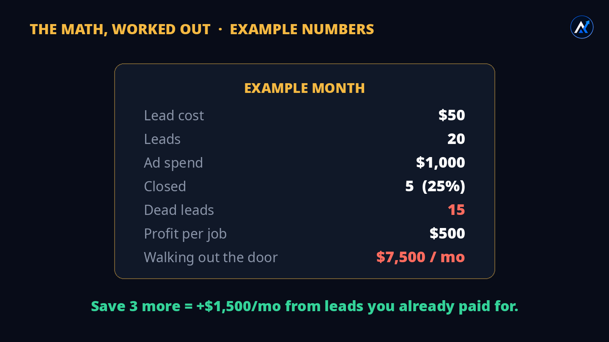
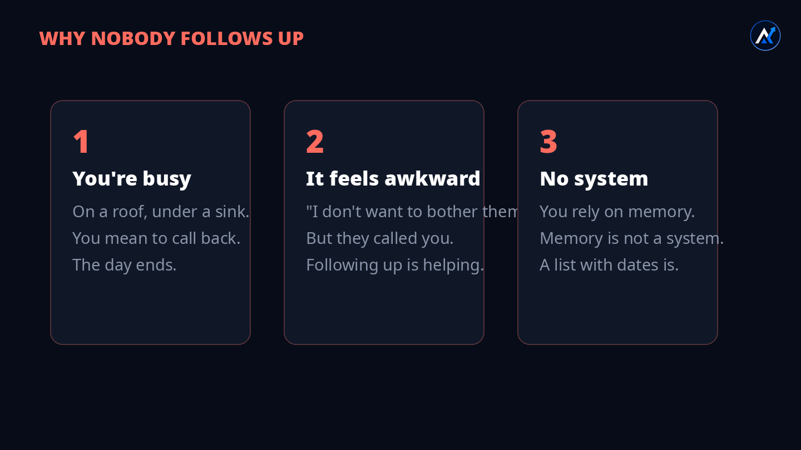
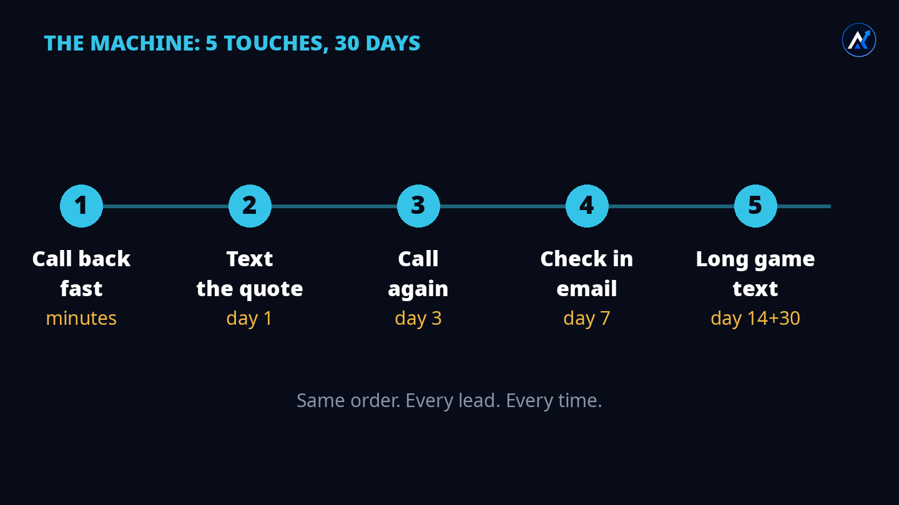
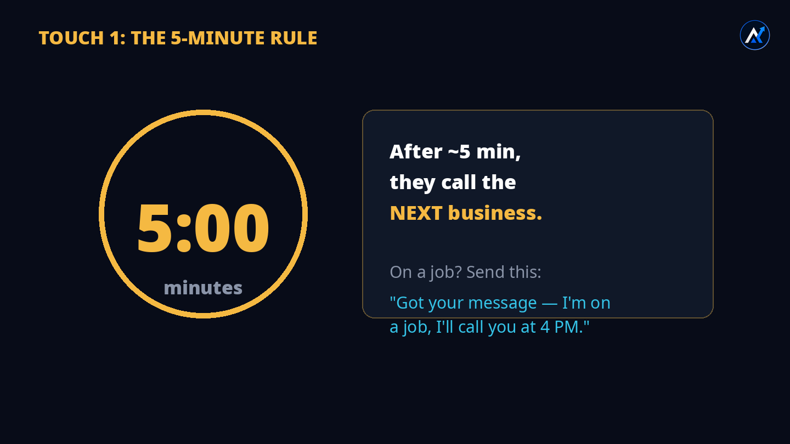
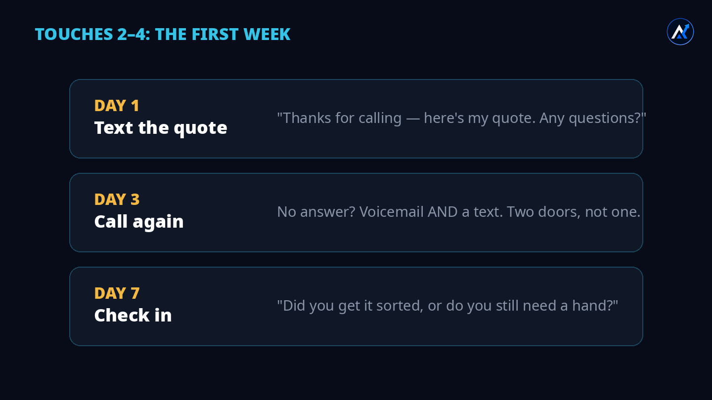
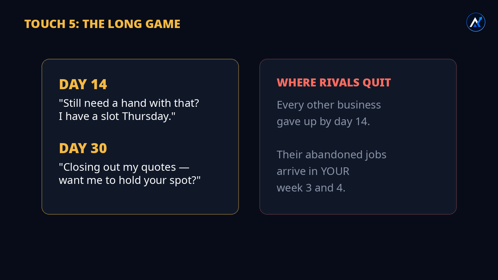
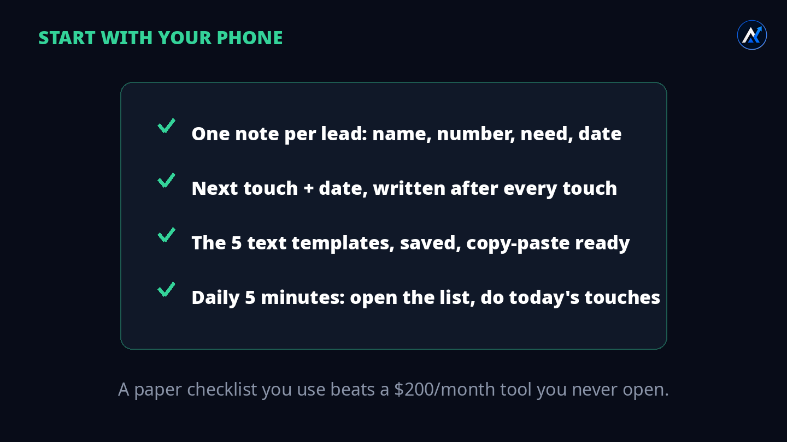
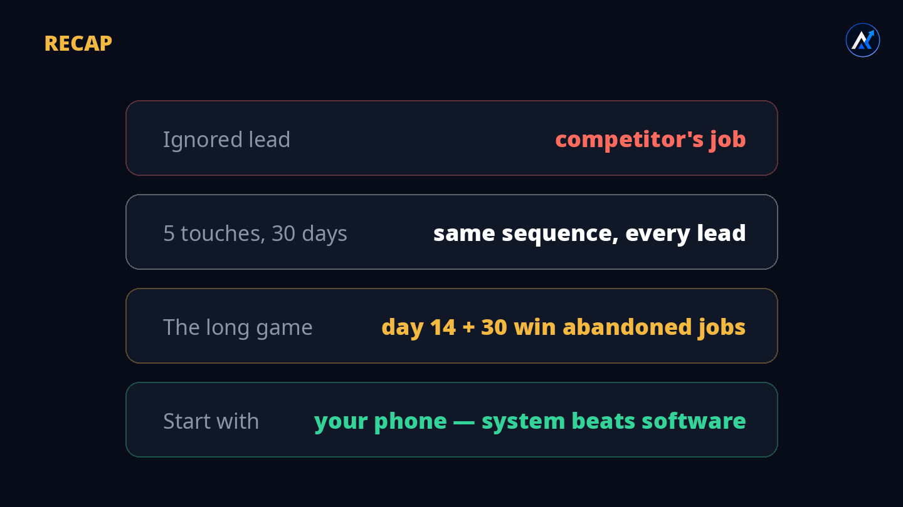

You paid for the lead. You did the work of quoting. Then silence — and the job quietly goes to someone else. Part 1 gave you the machine. Part 2 is the long game: the two touches almost nobody makes, in the weeks where almost everybody quits.
1The $50 that vanished

Think about a normal week. A homeowner calls about a leaking water heater. You are under a sink at another job. You think: "I'll call back tonight." Tonight comes, you are tired, the kids need dinner. Tomorrow you remember — but now it feels awkward, two days late. So you don't call. The lead is dead.
Here is the painful part. You already paid for that lead. Google or Facebook took your $50 the moment the phone rang. The money is gone whether you call back or not. The only question is: does that $50 turn into a job, or into nothing?
2Three businesses, one winner

That homeowner didn't call only you. They called three businesses. Business B calls back tomorrow — too late. Business C never calls back — forgotten. Business A calls back in five minutes and keeps showing up for a month. Business A gets the job.
Notice what decided it. Not the price. Not the reviews. Not the fanciest website. Speed first, then staying in touch. That is the whole game, and almost nobody plays the second half.
3The math, worked out

Let's say your numbers look like this. These are example numbers so you can see the shape — replace them with yours:
| Line | Example |
|---|---|
| Cost per lead | $50 |
| Leads this month | 20 |
| Ad spend | $1,000 |
| Jobs closed | 5 (25%) |
| Dead leads | 15 |
| Profit per job | $500 |
| Walking out the door | $7,500 / month |
| Save just 3 more | +$1,500 / month |
Read that last line again. You don't need more leads. You don't need a bigger ad budget. Three more jobs from leads you already paid for is $1,500 extra a month. That is what the long game is worth.
4Why nobody follows up

Reason one: you're busy. You're on a roof, under a sink, inside an attic. The lead comes in while your hands are full. You mean to call back. The day ends, and the lead is already cold in your mind.
Reason two: it feels awkward. "I don't want to bother them." Listen — they called you. They have a problem and they asked for help. Following up is not bothering. Bothering is calling someone who never asked. This person asked.
Reason three: you have no system. You rely on memory. Memory is not a system. A system is a list with names, numbers, and a date for the next touch — the same order, every lead, every time. When it's written down, "busy" and "awkward" stop mattering, because the list tells you what to do today.
5The machine: 5 touches, 30 days

Here is the full sequence. Part 1 covered the shape; Part 2 is about executing every step — especially the last one:
6Touch 1: the 5-minute rule

The homeowner called three businesses. They will hire the one that responds first — not because it's the best, but because speed feels like reliability. After about five minutes, they stop waiting and call the next name on the list.
But you're on a job. Your hands are full. So you don't call — you text. One thumb, ten seconds:
"Hi, got your message — I'm on a job right now, I'll call you at 4 PM."
Use it when: you can't talk. It buys you the afternoon and tells them they're not being ignored.That one text changes everything. Without it, you're "the guy who never called back." With it, you're "the busy professional who still made time." Same afternoon, completely different story.
7Touches 2–4: the first week

Day 1 — text the quote. Don't just say it on the phone. Put it in writing. A text can be re-read, forwarded to a husband or wife, and answered at midnight. A phone quote evaporates.
"Hi [Name], thanks for calling [Business]. Your quote is $[X] for [the work]. Any questions, just reply here. — [Your name]"
Copy-paste ready. Fill the three brackets, send.Day 3 — call again. Most owners stop here: "I already called once." That's exactly why this touch works — your competitors stopped too. No answer? Leave a voicemail and send a text. Two doors, not one.
"Hi [Name], it's [Your name] from [Business] — tried calling about your quote. Still need a hand? Reply here anytime."
Same words for the voicemail. One script, two channels.Day 7 — check in. This is where tone matters. You're not chasing. You're helping. There's a difference between "Just following up!!!" and a human checking in:
"Hi [Name], checking in — did you get the [service] sorted, or do you still need a hand? — [Your name]"
If they reply "just looking" → "No problem at all. I'll check back in a couple of weeks — if anything changes, I'm one text away."8Touch 5: the long game

Here is the truth nobody tells you: almost every business stops following up after one week. Day 14 arrives and their lead list is already forgotten. Day 30? That lead doesn't exist in their mind anymore.
But the homeowner's problem didn't disappear. The water heater still leaks. The roof still drips. They got busy, they postponed, the other guy they called never showed up. And in week 3 and 4, there is exactly one business still in touch with them: yours.
"Hi [Name], still need a hand with that [service]? I have a slot Thursday if you want it. — [Your name]"
Why it works: a concrete slot beats "let me know." You're making it easy to say yes."Hi [Name], I'm closing out my quotes for the month — want me to hold your spot, or should I close this one out? — [Your name]"
Why it works: it's honest, it's respectful, and "close this one out" makes them decide instead of drifting. Most replies come from this message.Notice the pattern across all five templates: short, human, one question max, always an easy way to reply. Nobody ever said "this text was too short." Plenty of people ignore texts that are too long.
9A real Tuesday
Let me show you the machine running on one ordinary lead. No software, no team — just a phone and the sequence.
10:14 AM, Tuesday. Mrs. Johnson calls about a leaking water heater. You're under a sink across town. You can't talk — so you send the holding text: "Got your message — I'm on a job, I'll call you at 4 PM." Ten seconds.
4:05 PM. You call. You listen, you quote $850 for the replacement. Then you text the quote in writing — Template Day 1. In your notes you write: Johnson — water heater — $850 — next: call Friday.
Friday (day 3). You call. No answer. Voicemail + text — Template Day 3. Notes: next: check in next Friday.
Next Friday (day 7). Check-in text — Template Day 7. She replies: "Still deciding, will let you know." You reply: "No problem at all — I'll check back in a couple of weeks." Notes: next: day 14.
Day 14. The slot text — Template Day 14. No reply. Most owners would delete her number here. You don't. Notes: next: day 30.
Day 30. The closing-out text — Template Day 30. She replies within the hour: "Actually yes — the other guy never showed up. Can you come Thursday?"
One job. $850 quoted, roughly $500 profit in our example math. Total extra effort after the first call: five short messages and six lines in a notebook. That is the machine.
10Five ways the machine breaks
The machine is simple, which means the ways to break it are simple too. Watch for these:
11Start with your phone

You need four things, and you probably have all of them already:
Later, when the machine is running and leads are coming in, you can buy software to automate it. But automation without a sequence just sends robotic spam faster. Build the sequence first. Software second.
12Recap

Find the hole.Fix the hole.Then grow.
The hole was never your ads. It was the silence after the phone rang. Five touches, thirty days, one phone — and the long game in weeks three and four where your competitors already quit. The system beats the software.
Which touch do you skip?
Be honest — is it the day-3 call, or the day-30 text? Tell me in the video comments. I read every one.
📖 Read Part 1 💬 Book a call